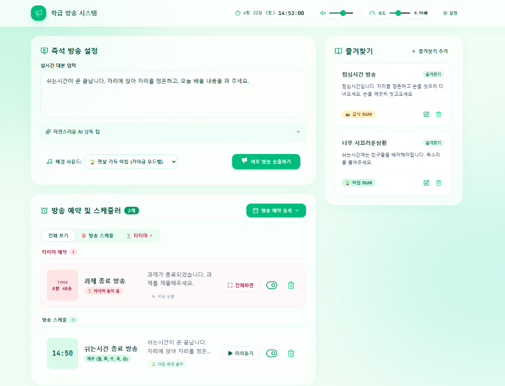
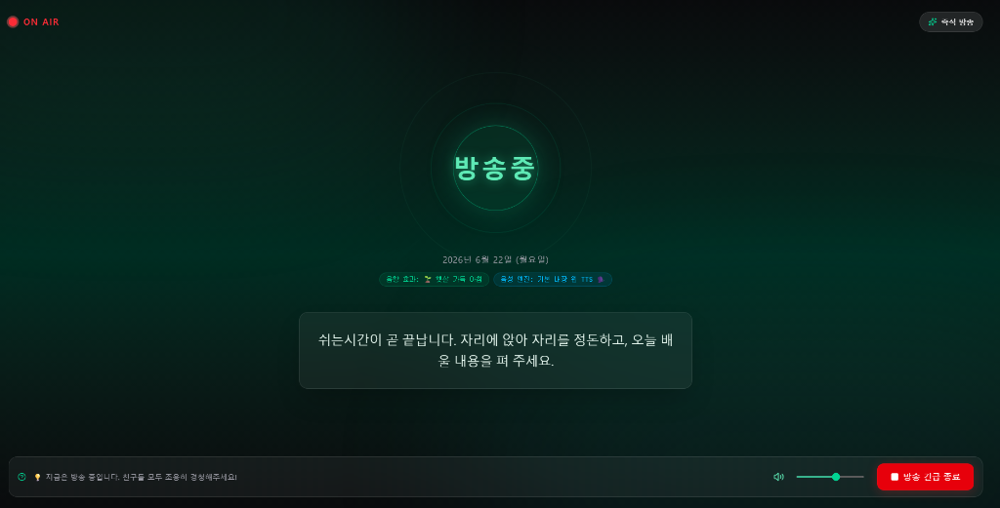
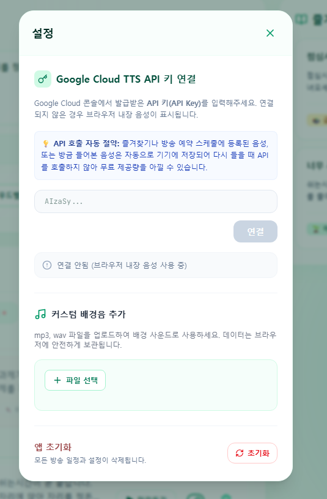

1단계
1 / 4 단계
1단계: 학급 방송앱 둘러보고 복제하기 (Remix)
스마트 방송앱의 주요 기능들을 살펴보고 내 보관함에 복제합니다.
📺 학급 방송앱은 무엇을 하나요?
- 📢 즉석 음성 방송 (TTS): 안내할 대사를 텍스트 입력창에 적기만 하면, 크롬 내장 음성 엔진이 생각보다 훨씬 또렷하고 자연스러운 목소리로 교실 스피커에 실시간 송출해 줍니다. (귀에 거슬리는 차가운 기계음이 아니에요!)
- ⏰ 전체화면 타이머 방송: 모둠 활동이나 쉬는 시간을 조율할 때 대사와 시간을 설정해 두면, 타이머가 만료되는 순간 알림음과 함께 자동으로 방송이 나갑니다. (전체화면 모드를 띄워두면 칠판 대용으로도 훌륭합니다!)
- 📅 정기 안내 방송 예약: 아침 조회, 종례 전 등 지정된 일정과 요일별 타이밍에 맞춰 정기 예약 방송 목록을 스케줄링하여 학급 운영을 자동화합니다.
- ⭐ 자주 쓰는 문구 즐겨찾기: "정리정돈을 시작하세요"처럼 매일 쓰는 문구는 즐겨찾기 카드로 만들어 두어 마우스 클릭 한 번으로 바로 송출할 수 있습니다.
화면 1
전체화면
즉석 방송설정, 방송예약, 즐겨찾기 방송 예약, 타이머 방송을 한화면에서 확인 할 수 있습니다.

화면 2
예약된 화면
예약을 하면 다음과 같이 확인할 수 있습니다. 필요에 맞게 사용하세요.

화면 3
방송중 화면
예약한 방송이 다음과 같은 화면으로 방송이 됩니다.

화면 4
설정화면
구글 클라우드 API를 연결하면 더 자연스러운 방송이 가능합니다. 이 기능은 오늘 실습을 통해 구현해 봅니다.

⚠️ 중요: 학교/교육청 계정 접속 차단 대처 방법
학교/교육청 구글 계정(예:
@o365.go.kr, @office.edu 등)은 교육망 보안 및 연령 제한 정책에 의해 AI Studio 서비스 접근이 차단됩니다. 반드시 개인 구글 계정(@gmail.com)으로 크롬 브라우저에 로그인하신 후 실습해 주세요.
복제 준비
학급 방송앱 템플릿 복제 준비 완료하기
개인 구글 계정 로그인을 확인하셨다면 아래 [학급 방송앱 템플릿 복제하기 🌿] 버튼을 클릭하여 공유된 AI Studio 템플릿 페이지를 엽니다.